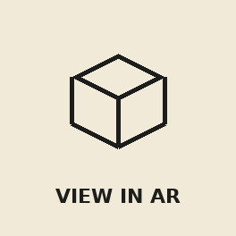

3D as an HTML citizen
Three rungs of the same ladder: 3D that lives in the document rather than sealed inside a canvas. Each tier below is progressively enhanced — the page detects what your browser supports, live, and tells you.
<img> for images. Safari 27+ on iPhone, iPad, Mac and Vision Pro.
checking
<a rel="ar"> places a USDZ model in your room. iPhone / iPad.
checking
This ladder is itself the lesson: progressive enhancement means every student sees something, and better browsers see more.
CSS 3D — the DOM is already three-dimensional
This swatch cube is not a rendering. Every face is an ordinary HTML panel —
headings, text, a working button — pushed into 3D with
transform-style: preserve-3d. Screen readers read it, keyboard
focus reaches it, CSS variables style it — which is why it re-dyes itself instantly
when you switch theme. Hover (or tab into it) to pause the spin.
Plain weave
1/1 · over, under
Satin
long warp floats
Basket
2/2 · paired ends
A real button
proof this is DOM, not pixels
Top
warp direction ↑
Bottom
weft direction →
Cube spinning at 1×. The button on face four works mid-rotation.
.cube { transform-style: preserve-3d; animation: spin 22s linear infinite; }
.face { position: absolute; backface-visibility: hidden; }
.face.f1 { transform: rotateY(0deg) translateZ(calc(var(--cube) / 2)); }
.face.f2 { transform: rotateY(90deg) translateZ(calc(var(--cube) / 2)); } /* … */The native <model> element
Shipped in Safari 26 on visionOS, and since 14 September 2026 in Safari 27 on iPhone,
iPad and Mac (also offered as a standalone Safari update for macOS Sequoia and Tahoe).
It is Safari-only: Chrome, Vivaldi, Edge and Firefox have no shipping date, and on
iPhone, Apple enables it in Safari but not in other browsers, even though they share
Safari's engine. One tag, no libraries: the browser itself renders the model.
stagemode="orbit" gives drag-to-rotate for free. Where <model>
is missing, this page swaps in model-viewer showing the same GLB; if that can't load
either, the <img> inside remains, the same graceful-degradation
pattern as <video>.
Native rendering status shown in the ladder above.

↑ Tap to place it in your room
AR Quick Look launches from Safari itself — in-app browsers and preview panes (including chat-app viewers) won't trigger it. Safari badges the corner of the image with a cube when AR is available.
<model stagemode="orbit" style="width:420px; aspect-ratio:4/3">
<source src="astronaut.usdz" type="model/vnd.usdz+zip">
<source src="chair.glb" type="model/gltf-binary">
<img src="fallback.jpg" alt="An astronaut"> <!-- graceful degradation -->
</model>Scripted 3D — a loom in raw WebGL, zero dependencies
This is the other end of the spectrum from Tier 1: no tag does the work, so the script does everything — geometry, lighting, camera, interaction. The plain-weave swatch below is generated procedurally (every warp and weft yarn is a tube of triangles built in JavaScript) and rendered with nothing but the browser's own WebGL. No library, no CDN, no network. It works from a file on your phone. Drag or swipe to turn it.
Plain weave, 1/1 · warp in ink, weft in thread · re-dyes with the theme.
// The whole pipeline, hand-rolled:
buildYarn(path) // sweep a circle along a sine curve → triangles
gl.bufferData(...) // upload geometry to the GPU
mat4.perspective(...) // camera
N·L shading // one light, two yarn colours, done<model-viewer>:
in real projects you rarely hand-roll WebGL; you load Google's
<model-viewer> component and point it at a GLB.
That needs one external script and a network connection — which is exactly
the fragility this file avoids for its core demo.
Checking whether the model-viewer CDN is reachable from here…
<script type="module"
src="https://ajax.googleapis.com/ajax/libs/model-viewer/4.0.0/model-viewer.min.js"></script>
<model-viewer src="chair.glb" camera-controls auto-rotate
alt="An upholstered armchair"></model-viewer>TSL — the material layer CLO's export drops
A GLB from CLO carries geometry and basic PBR maps, but not glTF's sheen extension — so the velvet-ish back-glow of a twill or a pile doesn't survive the trip. Three.js Shading Language (TSL) lets the page put it back: shader logic written as JavaScript nodes, compiled to WebGPU where available and WebGL 2 where not. Below, a hanging panel of 3/1 denim twill — indigo warp, ecru weft — generated entirely in the shader, no texture files.
Tier 3 loads Three.js r186 from a CDN — checking…
import * as THREE from 'three/webgpu';
import { Fn, uv, uniform, mix, step, sin, vec3, time } from 'three/tsl';
const scale = uniform(48); // ← slider writes here
const cloth = new THREE.MeshPhysicalNodeMaterial();
cloth.colorNode = twill3x1(uv().mul(scale)); // weave drawn in the shader
cloth.sheenNode = vec3(0.55, 0.62, 0.78).mul(sheen); // sheen is a COLOUR
cloth.iridescenceNode = irid.mul(sin(time).mul(.5).add(.5)); // speculative onlyThe production pattern for your teaching tools
The devil is what the tool forgets — and what canvas-only 3D forgets is the document: headings, focus order, alt text, CSS tokens. The ladder above keeps the document primary. One decision tree:
if ('HTMLModelElement' in window) → use <model> (native, USDZ/GLB)
else if (WebGL available) → scripted canvas 3D (self-contained,
or model-viewer + GLB online)
if (online + modern browser) → TSL material layer (WebGPU, or WebGL 2 fallback)
always → CSS 3D + <img> fallback (works offline)
Everything except two scripts is served from this site: the models sit in
models/ beside the page, so Tier 1 and AR need no other server.
Only the optional model-viewer component and Three.js (Tier 3) come from a CDN.
Models: Astronaut (Google model-viewer sample assets), SheenChair (Khronos glTF
sample assets).